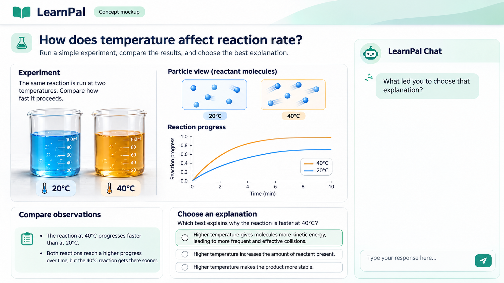
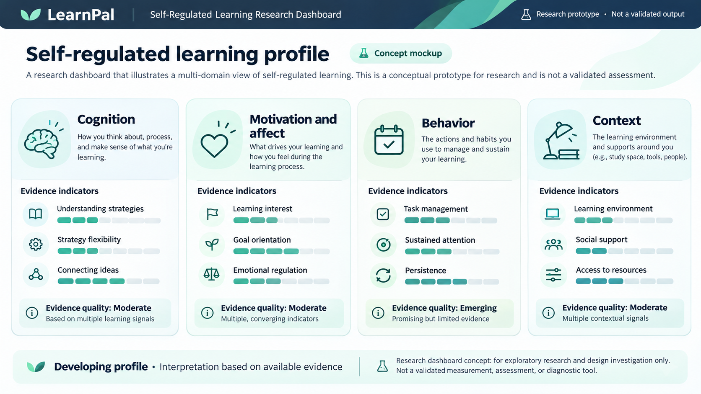

Explore STEM tasks.
Reflect on how you learn.
LearnPal is a planned learning environment powered by generative AI. Students will work on STEM learning activities and, at selected moments, use a chat to discuss how they approached a task, the decisions they made, and any difficulties they encountered.
Explore the concept ↓Explore a problem. Try an approach. Make a decision.
What will students do?
Students will complete STEM learning tasks in LearnPal. As they work, the system may invite them to answer a short question about their approach. For example, it might ask what they were trying to do when they changed direction, or what led them to choose a particular strategy.
Work on a task
Engage with a STEM learning activity in a web-based environment.
Make learning decisions
Choose approaches, reconsider ideas, and work through difficulties.
Share your thinking
Answer an occasional question about your approach in your own words.
What is LearnPal designed to measure?
LearnPal is being developed as part of research to develop and validate a way to measure students’ self-regulated learning (SRL): their capacity to plan, monitor, control, and reflect on their learning. The research draws on a framework that examines four areas of regulation: cognition, motivation and affect, behavior, and context. LearnPal is planned to present the developing SRL profile in a dashboard organized around these areas.
How will LearnPal work?
A student’s actions do not always reveal the reasons behind them. LearnPal is designed to bring together evidence from students’ activity, their work, and their responses in the chat. Its generative AI component will interpret the available evidence, identify where information is missing or unclear, and select and adapt a question from researcher-approved questions or templates. The system will use the combined evidence to build and update a picture of each student’s self-regulated learning over time.
Gather evidence from activity, work, and conversation.
Connect evidence to the learning process.
Ask a relevant question when more context is needed.
Refine the emerging picture over time.
A look at the planned experience
These images illustrate possible LearnPal screens. They are design concepts, not screenshots of working software or validated measurement results.


Research in development
LearnPal is a proposed application being developed as part of Yogev Shani’s PhD research at Tel Aviv University, under the supervision of Dr. Idit Adler. It is not yet available for student use. This site will be updated as the research and development progress.
Contact: yogevshani@mail.tau.ac.il